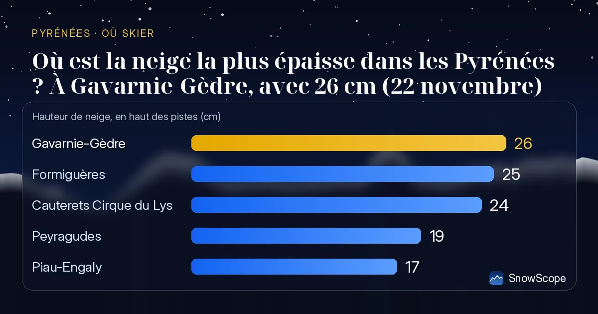

Où est la neige la plus épaisse dans les Pyrénées ? À Gavarnie-Gèdre, avec 26 cm (22 novembre)
Gavarnie-Gèdre conserve la neige la plus épaisse des Pyrénées le 22 novembre : 26 cm en haut, gagnés 7 cm en seulement 24 heures. La carte montre que 44 stations sur 53 ont du manteau blanc, et le sol enneigé couvre 3 460 km² dans la région, trois fois la surface d'il y a deux jours.
Consultez les prévisions neige en temps réel pour Gavarnie-Gèdre sur l'application SnowScopeHauteurs de neige, alertes poudreuse et carte 3D, gratuitement.
La montée des neiges : sa rapidité de formation
Le 20 novembre, seulement 1 570 km² des Pyrénées avaient du manteau blanc et 39 stations en possédaient. Le 22 novembre, le tableau a changé : 3 460 km² sont enneigés et 44 stations ont du manteau en altitude. Gavarnie-Gèdre a gagné 7 cm en un jour, Cauterets Cirque du Lys en a gagné 12 cm, et Piau-Engaly 8 cm. Ce n'est pas un volume de neige inhabituel encore, mais la vitesse compte : une montée rapide signale un changement météorologique.
Gavarnie-Gèdre est le plus haut des trois leaders (sommet à 2 283 m), ce qui l'aide à conserver la neige plus longtemps. Formiguères et Cauterets Cirque du Lys suivent de près : tous deux proches de 25 cm. Les trois se trouvent sur le versant atlantique de la chaîne, où les chutes les plus importantes arrivent en premier.
| Station | Hauteur de neige | Neige fraîche, 72 h | Attendu, jours suivants | Sommet |
|---|---|---|---|---|
| Gavarnie-Gèdre | 26 cm | 10 cm | 14 cm | 2 283 m |
| Formiguères | 25 cm | 4 cm | 7 cm | 2 305 m |
| Cauterets Cirque du Lys | 24 cm | 14 cm | 26 cm | 2 420 m |
| Peyragudes | 19 cm | 6 cm | 9 cm | 2 360 m |
| Piau-Engaly | 17 cm | 13 cm | 14 cm | 2 527 m |

Ce que vous verrez sur les pentes cette semaine
La prévision de neige pour les trois prochains jours apporte la première véritable fenêtre d'accumulation. Cauterets Cirque du Lys devrait gagner 26 cm d'ici le 25 novembre, atteignant 50 cm au total. Gavarnie-Gèdre en gagnera 14 cm. Piau-Engaly et Formiguères gagnent chacun environ 7-14 cm. Le 25 novembre, la carte prévoit 9 560 km² sous la neige—près de trois fois la couverture d'aujourd'hui.
L'altitude compte. À Gavarnie-Gèdre, la base à 1 818 m reste nue ou humide aujourd'hui (zéro thermique 2 090–2 190 m). Les pentes intermédiaires à 2 050 m ne gardent que des traces. Les pentes hautes à 2 283 m conservent la meilleure neige. Dans les 72 prochaines heures, le même schéma se reproduit : la neige adhère à l'altitude.
Risque de pluie le 23 novembre
Le 23 novembre, le zéro thermique à Gavarnie-Gèdre remonte fortement à 1 990–2 950 m. Le sommet des remontées (2 283 m) se situe à l'intérieur de cette plage, ce qui signifie que de la pluie ou du verglas peut tomber au sommet. De la neige fraîche devenant mouillée est lourde et instable ; attendez-vous à des conditions prudentes. Si vous skiez ce jour-là, partez tôt et descendez avant le cycle de fonte-regel, ou restez loin des pentes raides.
La situation s'améliore les 24–25 novembre alors que le zéro thermique redescend. La neige le 25 novembre devrait être plus sèche et plus légère.
Comment cette début de saison se compare
À Gavarnie-Gèdre (altitude 2 050 m), le sol est nu aujourd'hui alors que normalement 4 cm s'y trouve le 22 novembre. C'est un démarrage lent : seulement 11 des 46 derniers hivers ont été aussi mauvais. À Formiguères (2 021 m), 3 cm aujourd'hui dépasse la médiane—c'est plus profond que les habituels 3 cm de 21 des 46 derniers hivers. Cauterets Cirque du Lys (2 072 m) n'a que 1 cm, bien au-dessous des typiques 7 cm, avec seulement 9 des 46 derniers hivers plus secs.
En résumé : Gavarnie-Gèdre traîne, Formiguères est en avance, Cauterets traîne beaucoup. Le 25 novembre, les trois auront plus de neige, mais les écarts ne se combleront pas complètement.
Ce que les stations ont mesuré au sol
Épaisseur réelle de neige de trois stations de montagne le 21 novembre : Boí (2 537 m) a mesuré 9 cm et a reçu 3 cm en 24 heures. Núria (1 971 m) en retenait 6 cm. Das - Aeròdrom (1 096 m) en avait 3 cm. Ce sont des mesures ponctuelles, pas des prévisions de zone, mais elles confirment que les altitudes élevées se renforcent plus vite que les zones basses.
Les chiffres SnowScope pour les stations estiment les pentes hautes ; les données de station sont des mesures directes sur un site spécifique à cette date exacte. Les deux importent pour des raisons différentes : utilisez les estimations de station pour choisir quelle zone visiter, et les données de station comme vérification de la réalité.
Que emporter et où se concentrer
Si vous préparez un séjour aux Pyrénées dans les prochains jours, choisissez une pente exposée au nord en altitude (au-dessus de 2 100 m). Le terrain exposé au sud fondra le plus vite au soleil de novembre, surtout le 23 novembre sous risque de pluie. Apportez une couche pour neige mouillée et vérifiez l'ouverture des remontées avant de partir : la neige ne veut pas dire terrain ouvert.
La neige de début de saison est fine et peut cacher des rochers et de l'herbe. Restez sur les pistes balisées et damées jusqu'à l'épaississement du manteau. Si vous êtes attiré par l'hors-piste, consultez d'abord le bulletin officiel d'avalanche : un changement rapide de charge neigeuse est du temps propice aux avalanches.
Conseils aux skieurs
- Gavarnie-Gèdre domine aujourd'hui, mais Cauterets Cirque du Lys gagnera le plus de neige d'ici le 25 novembre—choisissez selon où vous voulez être et quand.
- De la pluie est prévue le 23 novembre au-dessus de 2 000 m dans certaines stations. Évitez le hors-piste ce jour-là et revenez aux pistes damées jusqu'au regel de la neige.
- Les pentes exposées au nord en altitude conservent la neige plus longtemps que le terrain exposé au sud en bas. Planifiez votre parcours altitude après altitude.
- Avant de faire du ski de randonnée ou du hors-piste, lisez le bulletin officiel d'avalanche des Pyrénées.
- La neige fine de début de saison cache les dangers. Testez le manteau et restez sur les pistes ouvertes jusqu'à ce que la couverture soit solide.
À propos de ces chiffres
Les hauteurs de neige des stations sont la neige la plus épaisse sur le haut du domaine à la date indiquée ; ce sont des estimations pour une zone, pas une mesure en un point. Les prévisions peuvent changer. Consultez toujours le bulletin d'avalanche officiel avant le hors-piste.
Bulletins d'avalanche officiels: Météo-France / Meteocat / AEMET
Citer ce bulletin
Pour la recherche, l'enseignement ou la presse : chiffres et graphiques réutilisables librement sous CC BY 4.0 avec cette citation.
SnowScope (2026), Où est la neige la plus épaisse dans les Pyrénées ? À Gavarnie-Gèdre, avec 26 cm (22 novembre), https://snowscope.app/blog/fr/2026/11/pyrenees-gavarnie-gedre-snow-depth-today-22-november-2026.html, consulté le 2026-11-22
SnowScope (Atlas Labs). (2026, November 22). Où est la neige la plus épaisse dans les Pyrénées ? À Gavarnie-Gèdre, avec 26 cm (22 novembre). SnowScope snow reports. https://snowscope.app/blog/fr/2026/11/pyrenees-gavarnie-gedre-snow-depth-today-22-november-2026.html
BibTeX
@misc{snowscope2026pyreneesgavarniegedresno,
author = {{SnowScope (Atlas Labs)}},
title = {Où est la neige la plus épaisse dans les Pyrénées ? À Gavarnie-Gèdre, avec 26 cm (22 novembre)},
year = {2026},
month = nov,
howpublished = {\url{https://snowscope.app/blog/fr/2026/11/pyrenees-gavarnie-gedre-snow-depth-today-22-november-2026.html}},
note = {Published 2026-11-22 10:48 UTC; accessed 2026-11-22}
}· CC BY 4.0 · Méthodes, données et outils →
Gavarnie-Gèdre : neige et température selon l'altitude, cet hiver vs l'hiver dernier (outils) →
Suivre Gavarnie-Gèdre
Gratuit : un message quand la neige arrive, et la météo chaque matin.
Autres bulletins neige

Un mélange de pluie et neige est attendu sur les Pyrénées au cours des trois prochains jours, l'isotherme 0 °C dépassant les sommets des stations dès dimanche. Entre 13 et 24 cm de neige nouvelle prévue en altitude.

Cauterets propose 25 km de pistes pour 46 EUR, mais notre historique d'enneigement montre que la meilleure chance d'avoir de la neige est la dernière semaine de décembre.

La neige arrivera aux Pyrénées en deux vagues sur 14 jours, avec 91 cm prévus en altitude. La première semaine apporte 49 % du total ; la semaine 2 reste régulière. Données du 19 novembre.